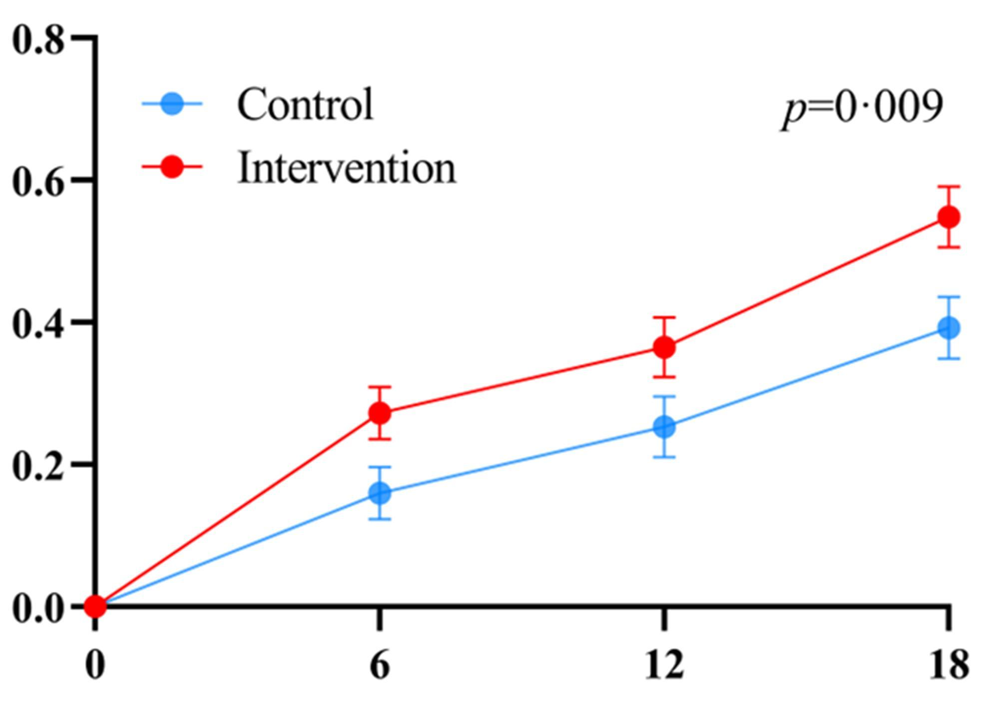
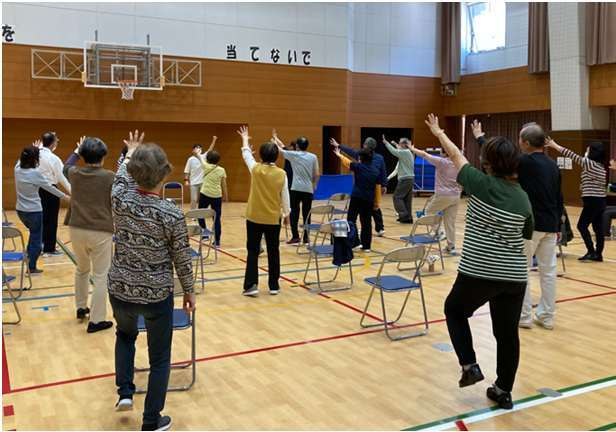
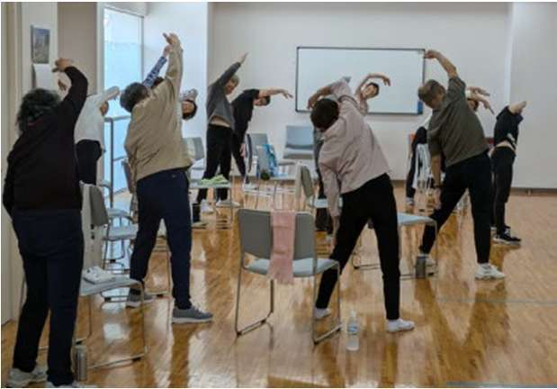
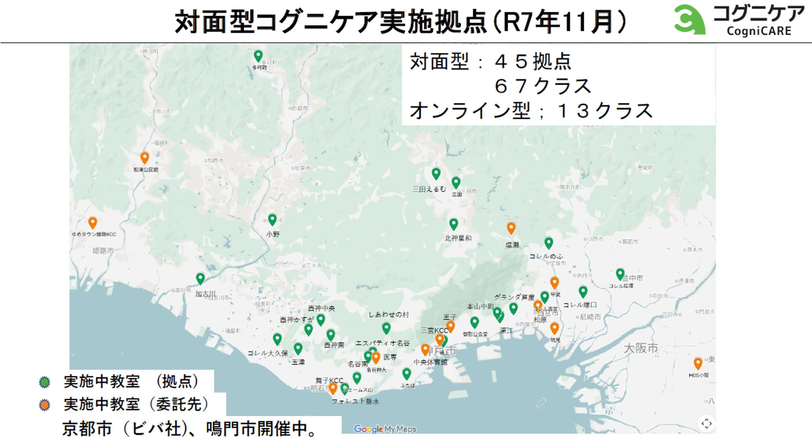

Research
丹波研究とコグニケア
神戸大学は、認知機能訓練・運動指導・栄養指導・生活習慣病管理の4つを同時に行う多因子介入プログラムにより、高齢者の認知機能低下を抑制できるかを検証してきました。
Multi-domain Approach
4つの介入を、同時に行う
単一の対策ではなく、複数の要因に同時に働きかける。これが「多因子介入」の考え方です。神戸大学の研究では、次の4つを組み合わせました。
認知機能訓練
注意力・記憶・判断などに働きかける脳のトレーニング。
運動指導
有酸素運動・筋力トレーニングと、運動と脳トレを同時に行う二重課題運動。
栄養指導
認知機能を良好に維持するための食事と栄養のアプローチ。
生活習慣病管理
血圧・血糖・脂質など、認知症のリスク要因となる生活習慣病のコントロール。
これら4つに「社会参加」を加えたものが、生活者向けの「100年脳の5つの習慣」です。
J-MINT PRIME Tamba
兵庫県丹波市での実証研究
200名が参加、1年半にわたる介入研究
国立長寿医療研究センターが行う「認知症対策官民イノベーション実証基盤整備事業」（2019年〜）に神戸大学の研究が採択され、兵庫県丹波市で日本版FINGER研究（J-MINT PRIME Tamba研究）を実施しました。
2020年10月より、65〜85歳の200名の被験者を選び、うち100名に多因子介入を1年半にわたり継続的に実施。残る100名は待機群として比較しました。丹波市、共同研究機関、支援機関との連携のもとで進められました。
- 対象：65〜85歳の高齢者 200名（介入群100名・非介入群100名）
- 期間：2020年10月から1年半
- 場所：兵庫県丹波市

研究の結果：国内で初めて、認知機能の向上をデータで証明
4つの介入を経験した100名は、注意力、集中力、反応速度などにおいて、非介入の100名よりも認知機能が向上していることが、初めてデータとして明らかになりました。多因子介入が高齢者の認知機能維持管理に効果があることを示す、日本初の研究成果です（2024年発表、国際誌 Alzheimer's & Dementia 掲載）。
CogniCARE
研究から生まれた、認知症予防プログラム「コグニケア」
研究成果をエビデンスとして神戸大学が開発した、健康づくり・認知症予防サービス。3つのアプローチを連動させ、健康寿命の延伸を目指します。現在約1,500名の方が受講しています。

頭と体の運動教室（60分プログラム）
神戸大学認定の運動講師が、健康面・安全面に徹底的に配慮しながら指導します。介護予防、フレイル予防、認知機能向上への効果が評価され、受講者は着実に増加しています。
- 健康チェック（10分）血圧・心拍・体温を測定し、当日の体調を確認
- 全身運動（20分）ストレッチ・体幹トレーニング・転倒予防
- 二重課題運動（20分）運動×脳トレ。二つの課題を同時に実行し認知機能へアプローチ
- グループコミュニケーション（10分）感想共有と次回案内。つながりと継続の力に

健康づくりセミナー
神戸大学の教授陣が、認知機能向上と健康づくりに関する研究成果を惜しみなく提供します。サルコペニア・フレイル、睡眠、腸内細菌、栄養管理、認知症の予防と治療の最前線など、認知症以外にも幅広い領域をカバーする内容が好評です。
アプローチ 3健康状態の見える化
認知機能検査、血液検査による健康度評価、アクティブライフ調査（身体的・精神的・社会的活動の評価）を年1回実施。将来の認知機能低下リスクを可視化したレポートを提供し、「測定 → レポート → 行動変容 → 再測定」の改善サイクルを回します。
What makes it different
一般的な運動教室との違い
コグニケアは「エビデンスベースのフルパッケージ型総合サービス」です。
| 比較項目 | 一般的な運動教室 | 神戸大学 コグニケア |
|---|---|---|
| 目的 | 体力維持・増進（身体機能のみ） | 認知症予防 ＋ 健康寿命延伸（脳と体の両方にアプローチ） |
| エビデンス | なし、または限定的 | 神戸大学の実証研究に基づく（医学的・科学的根拠あり） |
| 検査・測定 | なし、または簡易体力測定 | 多角的な評価を実施（認知機能・血液検査・社会活動量） |
| 継続支援 | 運動プログラムの提供のみ | 運動 ＋ セミナー ＋ 見える化（統合的なフォローアップ体制） |
Locations
実施拠点

兵庫県を中心に約50のリアル拠点。2026年度中に東京都内へ
対面型は45拠点・67クラス、オンライン型は13クラス（2025年11月時点）。Web上での運動教室「eコグニケア」も実施しており、場所を問わず参加できます。
- 2023年：受講者数が500人を突破
- 2024年：NHK「クローズアップ現代」が日本初の成果を特集
- 2025年：受講者数が1,000人を突破。兵庫県芦屋市と包括連携協定を締結
- 2026年：受講者数が1,500人を突破。東京都内への進出（予定）
※「コグニケア」は神戸大学の登録商標です。